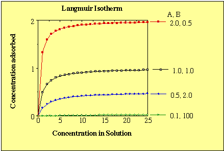
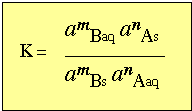
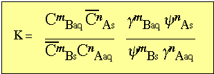
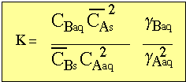
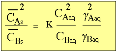
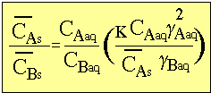

Drever, James I., 1997 The Geochemistry of Natural Waters: Surface and Groundwater Environments. Prentice Hall, Upper Saddle River, NJ.436 P.
Langmuir, Donald, 1997 Aqueous
Environmental Geochemistry. Prentice Hall, Upper Saddle
River, NJ.600 P.
A special case of the Langmuir isotherm is where B>>C.
This results in a simple linear isotherm.
where:
therefore,
Graphically the Langmuir isotherms appear below with different relative values of A and B. Note that the concentration of the adsorbed species can never exceed that which is possible by the number of exchange sites (e.g. the cation exchange capacity of the clay).

This form handles species in non-ideal solutions or a case with heterogeneous surface sites.
s =
adsorbed species on the surface of A or B
aq = dissolved species A or B in solution
The equilibrium activity product is therefore written as

recalling
a = C γ and a = bar-C γ

then,

upon rearranging,

In this case, γA and γB are not equal . Even if they were
equal the ratio of γ2B to γB ) is not equal to 1.
By re-writing the above as:

Under these conditions, it is possible to lower the ratio of
adsorbed cation by lowering the concentration of dissolved A and
B, even while maintaining a constant ratio of A and B in
solution.
This expresses the observation that upon dilution, a greater
proportion of higher valent ions will be taken up by the solid
phase.
This important when trying to determine the exchange cation of
clay in sea water. If you rinse or dilute the solution, then
there will be preferential adsorption of Mg ions in the clays.